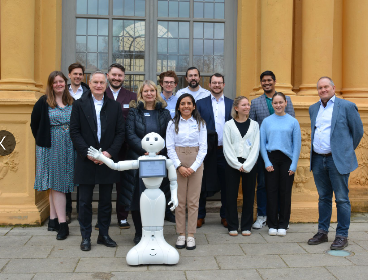

Professional Experience
Experience across robotics/HRI research software, teaching, and industrial engineering operations. Click “View Details” to expand.
Working Student — Human–Robot Interaction (HRI)
FAU Erlangen-Nürnberg, Erlangen, Germany • 05/2024 – 03/2025
Project: Acceptance Model Generator for Human–Robot Interaction (HRI)
Funded by the Bavarian Research Foundation (Bayerische Forschungsstiftung)
Responsibilities:
- Conducted literature research in Social Robotics focusing on acceptance factors in HRI.
- Reviewed and synthesized insights from ~200 papers/taxonomies on trust, usability, autonomy, and safety.
- Built a full-stack web-based acceptance model generator based on Onnasch et al. taxonomy.
- Implemented backend logic using Flask (Python) with a structured multi-page UI in HTML/CSS.
- Mapped user inputs (robot type, autonomy level, team/task context) to psychological constructs; used Pandas + Excel-based backend integration.
- Added bilingual UI (English/German) and branded styling aligned with the lab identity.
- Collaborated with researchers to validate the model and prepare for behavioral experiments.

Lecturer — Electrical & Electronic Engineering
Premier University, Chattogram, Bangladesh • 04/2021 – 04/2022
Responsibilities:
- Delivered undergraduate lectures in Signals & Systems, Electronics, Digital Logic Design.
- Prepared and evaluated assignments/quizzes/finals; maintained grading and academic records.
- Supervised labs: MATLAB, Python basics, 8085/8051 microprocessor & microcontroller programming, and digital circuit design.
- Mentored students on final-year embedded systems projects and implementation planning.
- Supported curriculum updates and lab manual improvements to align with industry-relevant skills.
Engineer — Power Plant Operations (100 MW Gas-Based Generation)
Abul Khair Steel & Power Ltd, Chattogram, Bangladesh • 04/2019 – 03/2021
Department: Power Plant Operations (Gas-Based Energy Generation)
Responsibilities:
- Supported continuous operations in a 100 MW gas-powered energy plant serving industrial demand.
- Monitored and maintained Rolls Royce Bergen Gas Engines for reliable electricity generation.
- Designed/installed sensors for abnormal condition detection (temperature, vibration, leakage) to support predictive maintenance.
- Performed scheduled maintenance across engines and auxiliaries (alternators, compressors, cooling, control panels).
- Managed grid intake and synchronization with in-house generation during varying load conditions.
- Executed troubleshooting and fault diagnosis to minimize downtime and operational risk.
- Prepared daily operational and energy output reports for senior management.